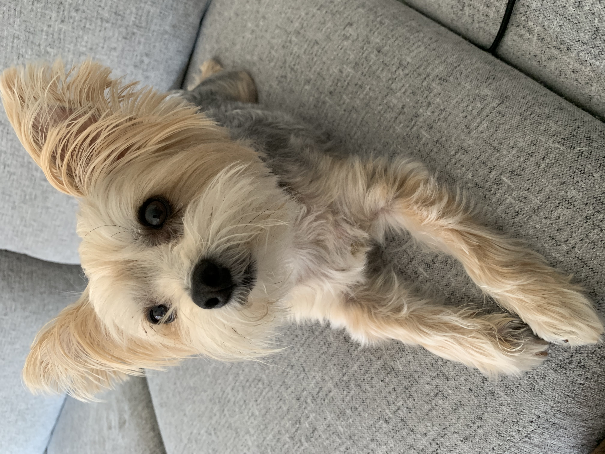

Huckleberry
Pet Stats:
Breed: Morkie (Maltese/Yorkshire Terrier mix)
Age: 4 human years
Favorite Toy: Some sort of weird blue, eaten plastic bone
Average Walk Per Day: 1 km
Owners Name: Robbie, Carrie and Jordan Bisnath
Huckleberry (a.k.a. "Dog-face" because he has the face of a "dog")
Huckleberry is a morkie. While technically a dog, he's actually more like cat. (Don't tell him I said that.)
Huckleberry hates squirrels and raccoons. He once tried to fight a raccoon that was twice his size. We had a long conversation about why taking on a wild animal twice his size was not in his best interests but he's not a good listener.
Huckleberry doesn't like rap music that much and will often leave the room if someone is playing said "rap" music.
Huckleberry really likes cheese. For instance, if he hears the wrapper tear from a cheese string snack, he will stop whatever he's doing (quarrelling with raccoons in the yard, hanging out in a laundry basket etc.) and will beg for a piece.
Pictures!